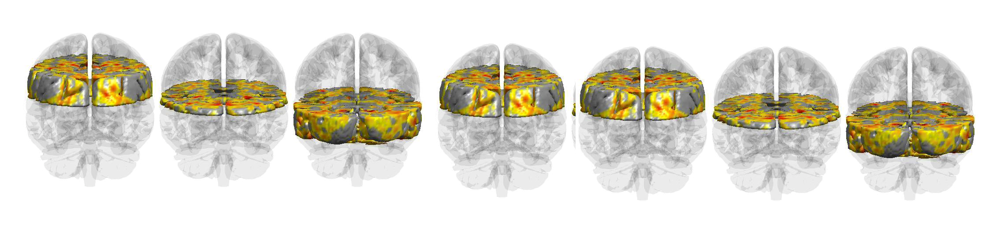

A lightweight MATLAB toolbox for post-preprocessing human fMRI analysis. All functions share one 228,453-element MNI152 brain vector — no frameworks, no compiled code, no hidden steps. Built for naturalistic paradigms. In use since 2012.

Every module shares the same brain vector format — mix and match freely, no conversion needed.
Access any atlas with fmri_atlas(n) — no external toolbox required.
No compilation, no configuration files, no package manager.
Requires MATLAB R2014b+. SPM8+ required only for six cluster inference functions.
Cited in 20+ peer-reviewed publications across leading neuroscience journals.
+ 14 additional publications in Frontiers in Human Neuroscience, Cortex, PLOS ONE, Brain Sciences, and others.